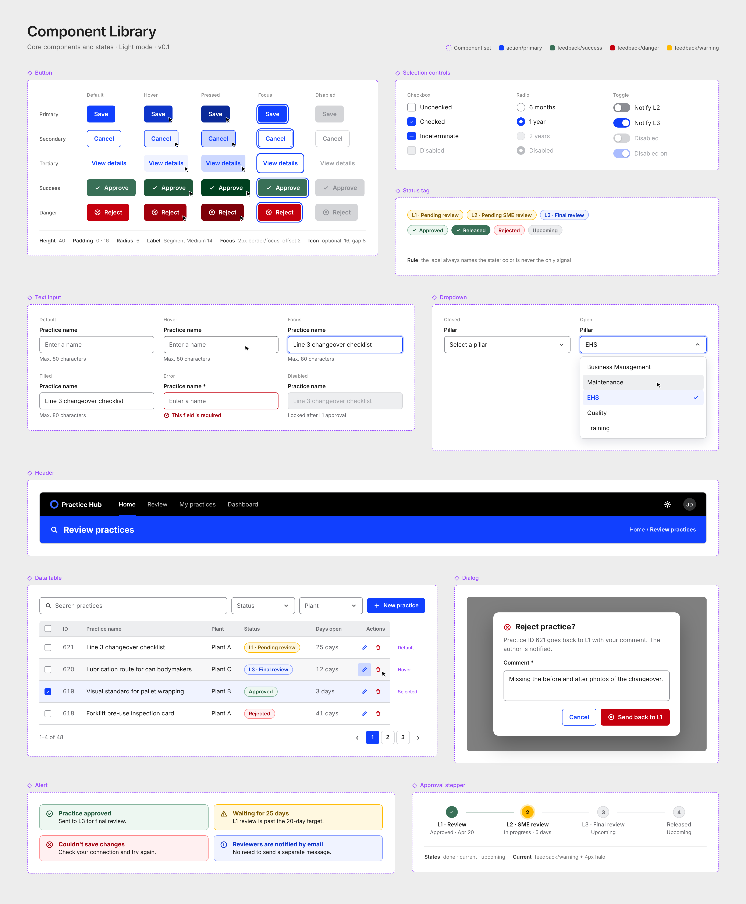
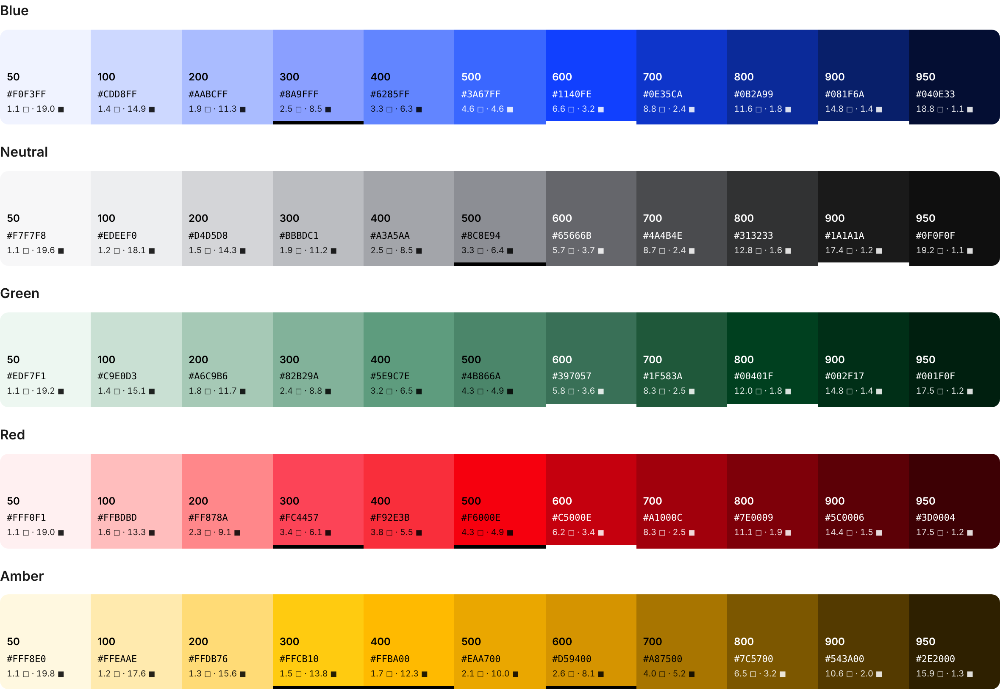
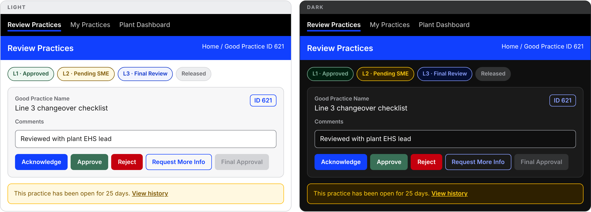
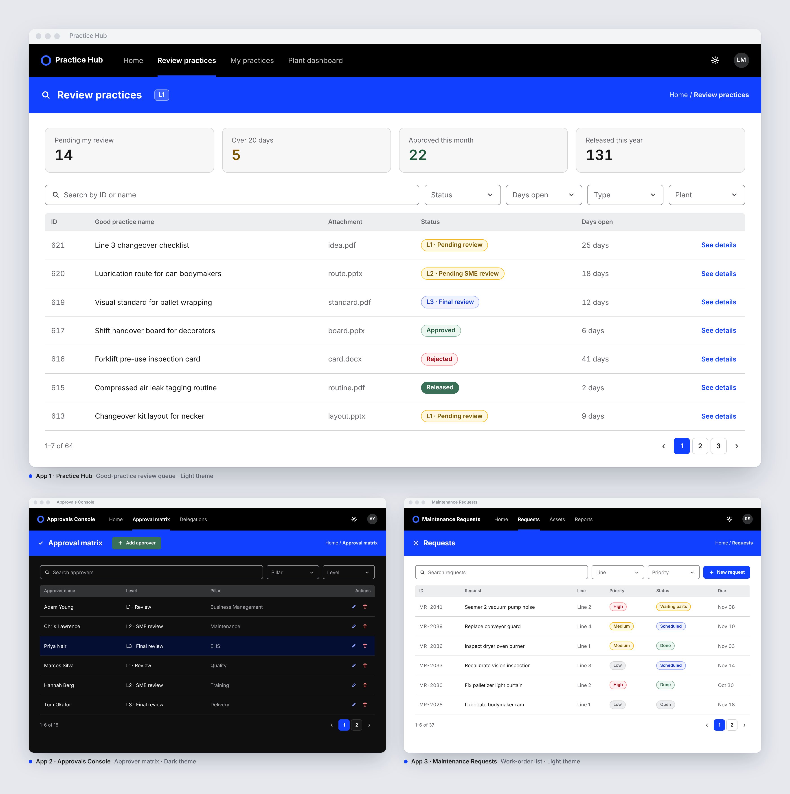

Contexto
Uma multinacional de embalagens tinha vários apps internos feitos em Microsoft Power Apps, uma plataforma low-code, para atender diferentes áreas de negócio. Esses apps eram desenvolvidos por pessoas diferentes, do cliente e da Smarthis, e em momentos diferentes.
A empresa já tinha uma identidade visual corporativa, mas ela não se traduzia em padrões de interface. Cada desenvolvedor tomava as próprias decisões de cor, tipografia, espaçamento e componentes. O resultado eram apps que pareciam produtos diferentes e muito retrabalho a cada novo projeto.
Ninguém tinha pedido um Design System. A iniciativa foi minha: propus o projeto no meu Plano de Desenvolvimento Individual (PDI) na Smarthis, por enxergar que a falta de padrões afetava tanto a qualidade dos apps quanto a produtividade do time.
O desafio
Criar um sistema de design que funcionasse dentro das limitações de uma plataforma low-code e que fosse adotado por desenvolvedores que não são designers.
O sistema precisava otimizar o trabalho desses desenvolvedores.
Pergunta que guiou o projeto Como dar consistência aos apps e, ao mesmo tempo, tornar o trabalho dos desenvolvedores mais rápido?
Investigação: entrevistas com desenvolvedores
Antes de definir qualquer padrão visual, conduzi 10+ entrevistas com desenvolvedores de Power Apps do cliente e da Smarthis. O objetivo era entender como eles constroem os apps, onde perdem tempo e quais decisões de design tomam sem apoio.
A dor nº 1 A tela em branco. Todos os desenvolvedores entrevistados travavam no início de cada tela, sem referência visual.
Logo atrás vieram:
- Dificuldade para planejar o app: faltavam critérios para tomar as decisões de estrutura antes de abrir o Power Apps
- Retrabalho por feedback tardio: problemas de interface só apareciam quando o app era mostrado ao cliente, e corrigir no fim custava caro
- Responsividade frustrante: elementos posicionados com coordenadas fixas quebravam em outros tamanhos de tela
- Falta de feedback de sistema: o usuário não sabia se uma ação tinha funcionado, o que já tinha gerado reclamação de cliente
- Dúvida na escolha de componentes: dropdown, radio ou toggle, sem critério claro
- Telas “feias sem saber por quê”: falta de hierarquia visual e de espaçamento consistente
- Cores inventadas a cada app, sem relação com a marca nem com os estados do sistema
Descoberta-chave: os desenvolvedores não precisavam virar designers. Eles precisavam de critérios e pontos de partida prontos. Isso definiu as duas frentes do projeto: um sistema de componentes e um guia prático de decisões.
O que eu defini
01 Foundations
Traduzi a identidade visual corporativa em decisões de interface:
- Cores: paleta funcional com primária, estados de sucesso, alerta e erro, e neutros
- Tipografia: escala de tamanhos e pesos para títulos, textos e rótulos
- Grid e espaçamento: estrutura de layout para padronizar as telas
- Design tokens: valores nomeados que a desenvolvedora usa direto no Power Apps, no lugar de códigos de cor e tamanhos soltos
02 Component Library
Defini os componentes reutilizáveis e seus estados, e orientei a desenvolvedora na construção em Power Apps. Eu cuidava do comportamento visual e de uso de cada componente, e ela da viabilidade técnica e da implementação.
A primeira versão da biblioteca já cobria os seguintes pontos:
- Botões primário, secundário, terciário, de sucesso e de perigo, cada um com os estados padrão, hover, pressionado, foco e desabilitado
- Controles de seleção: checkbox, radio e toggle
- Formulário: campo de texto com dica, erro e estado bloqueado, e dropdown
- Estrutura: cabeçalho com navegação, tabela de dados com busca, filtros e paginação, e diálogo de confirmação
- Feedback: tags de status, alertas e um stepper que mostra em que etapa da aprovação cada item está

03 Documentação e boas práticas
Para que o sistema fosse usado sem depender de mim, documentei os componentes e criei o Guia de UX para devs Power Apps: um guia interativo em HTML, com 8 tópicos, em que cada tópico responde a uma dor das entrevistas.
| Tópico | Dor | O que o tópico traz |
|---|---|---|
| 01 · Antes de começar | Dificuldade para planejar o app | 6 critérios para decidir antes de abrir o Power Apps, com checklist |
| 02 · Templates de tela | Tela em branco | Esqueletos anotados de formulário, listagem e detalhe para começar cada tela |
| 03 · Hierarquia e espaçamento | Telas desorganizadas, sem hierarquia visual | Exemplos de antes e depois e uma escala fixa de espaçamento (4, 8, 16, 24, 32) |
| 04 · Escolha de componentes | Dúvida entre dropdown, radio, toggle e outros | Um recomendador interativo que indica o componente certo para cada situação |
| 05 · Cores e tipografia | Cada app com cores escolhidas sem critério | O papel de cada cor (marca, ações, sucesso, alerta e erro) e a escala de tamanhos de texto |
| 06 · Feedback de sistema | O usuário não sabe se a ação funcionou | Um simulador dos estados de sucesso, erro, carregamento e confirmação |
| 07 · Responsividade | Telas que quebram fora do tamanho em que foram feitas | O mesmo formulário adaptado para tablet e celular, com as regras de layout e as fórmulas do Power Apps que fazem a tela se ajustar |
| 08 · Checklist de entrega | Retrabalho quando o cliente aponta problemas no fim | Uma lista de revisão para usar antes de mostrar o app ao cliente |
Duas decisões de design do guia:
- Regras simples no lugar de teoria. Por exemplo: “O usuário vai inserir, navegar ou consultar? Inserir → formulário. Navegar → listagem. Consultar → detalhe.” Uma pergunta já define o ponto de partida.
- Interatividade para aprender fazendo. Checklists marcáveis, recomendador de componentes e simulação de feedback tornam o guia uma ferramenta de consulta, não um documento para ler uma vez.
04 Governança
Para o sistema continuar consistente depois da entrega, defini um caminho único para qualquer demanda. Quem usa ou desenvolve os apps abre um chamado com dúvidas, bugs, reclamações ou pedidos de novos componentes.
O chamado chega para mim e para a desenvolvedora, e juntas fazemos o ajuste ou tiramos a dúvida. Como toda mudança passa por nós duas, o sistema não se fragmenta a cada pedido.
Evolução: tokens de cor com tema claro e escuro
Com o sistema em uso, o passo seguinte foi reorganizar as cores em design tokens em duas camadas, prontos para tema claro e escuro e validados contra a WCAG 2.2 AA.
- Primitivas: escalas de 50 a 950 para azul, neutro, verde, vermelho, âmbar e laranja. As cores do guia de identidade são as âncoras, e os tons intermediários foram calculados para que a escala avance em passos visualmente uniformes. Ficam ocultas na biblioteca publicada
- Semânticas: 39 tokens nomeados pela função, não pela cor (
bg/surface,text/secondary,action/primary,feedback/danger). São eles que vão nas propriedades Fill, Color e BorderColor do Power Apps

O mesmo componente troca de tema sem mudar nenhuma regra, só o modo das variáveis:
| Token | Claro | Escuro | Uso |
|---|---|---|---|
bg/canvas | #FFFFFF | #0F0F0F | Fundo da tela |
text/primary | #1A1A1A | #F7F7F8 | Texto principal |
text/link | #1140FE | #8A9FFF | Links e ações em texto |
action/primary | #1140FE | #1140FE | Botão primário |
feedback/success | #397057 | #397057 | Botões de aprovar e salvar |
border/strong | #8C8E94 | #8C8E94 | Borda de campos (mínimo 3:1) |

O desafio do low-code: tokens que o Power Apps não comporta sozinho
O tema nativo do Power Apps gera todas as cores a partir de uma única cor base, sem espaço para os 39 tokens semânticos nem garantia de contraste.
Em vez de abrir mão do sistema, tratei os tokens como fonte única, num formato padrão (W3C DTCG). Do mesmo arquivo saem as variáveis do Figma e um registro global que os componentes consultam no lugar do tema nativo. Assim, o tema claro e escuro e a validação de contraste se mantêm mesmo dentro das limitações da plataforma: feedback/danger é o mesmo vermelho, com o mesmo contraste validado, em qualquer app.
Decisões que saíram da validação de contraste:
- 68 de 68 combinações passam na WCAG AA: texto com pelo menos 4,5:1 e bordas, ícones e foco com pelo menos 3:1, nos dois temas
- O verde dos botões de sucesso tinha cerca de 2:1 com texto branco. O novo verde, vindo da paleta oficial de dados, chega a 5,8:1
- O azul sólido da marca é o mesmo nos dois temas, porque texto branco sobre ele dá 6,6:1. Já o azul usado em texto e ícones muda para um tom mais claro no escuro, porque o original sobre preto dá só 3,2:1
- A paleta de visualização de dados ficou separada, só para gráficos e Power BI, fora dos componentes de interface
Os tokens também resolveram um problema de significado. No fluxo de aprovação, dois níveis diferentes usavam laranja e âmbar parecidos. Agora cada estado usa uma única família semântica, e o rótulo da tag sempre diz o estado: a cor nunca é o único sinal.
| Estado | Família | Tokens da tag |
|---|---|---|
| Aguardando revisão (L1 e L2) | Alerta | feedback/warning-subtle + warning-text |
| Revisão final (L3) | Informação | feedback/info-subtle + info-text |
| Etapa aprovada | Sucesso | feedback/success-subtle + success-text |
| Aprovado e publicado | Sucesso sólido | feedback/success + text/on-brand |
| Rejeitado ou devolvido | Erro | feedback/danger-subtle + danger-text |
| Próxima etapa | Neutro | bg/subtle + text/secondary |
Colaboração design × desenvolvimento
O sistema foi construído a quatro mãos:
| Eu (design) | Desenvolvedora (Power Apps) |
|---|---|
| Entrevistas e síntese das dores | Avaliação de viabilidade técnica |
| Foundations, tokens e especificação dos componentes | Construção dos componentes em Power Apps |
| Documentação, guia de boas práticas e governança | Testes técnicos e ajustes de implementação |
| Revisão visual dos componentes implementados | Feedback sobre limitações da plataforma |
Trabalhar com uma plataforma low-code exigiu adaptar o design ao que o Power Apps permite. O caso mais marcante foram os tokens de cor: como o tema nativo não comportava o sistema, a saída foi o registro de tokens descrito acima.
Resultado
- 6apps de diferentes áreas usando a biblioteca
- 8tópicos no guia de UX para devs
- 68/68combinações de cor dentro da WCAG AA
Novos apps passaram a começar de uma base pronta, sem a tela em branco.

Aprendizados
- Design System é produto e o usuário é o desenvolvedor. Começar pelas entrevistas fez o sistema resolver dores reais de quem constrói os apps, e isso ajudou na adoção.
- Restrição técnica faz parte do design. Em low-code, um bom componente é o que pode ser implementado e mantido, não só o mais bonito.
- Documentar é tão importante quanto desenhar. Sem guia e governança, o sistema voltaria a se fragmentar a cada novo app.
- Acessibilidade começa no token. Validar o contraste na camada semântica garante que qualquer tela montada com os tokens já nasce dentro da WCAG AA.
Telas e dados foram anonimizados para preservar a confidencialidade do cliente. A tela de exemplo dos tokens usa dados fictícios.